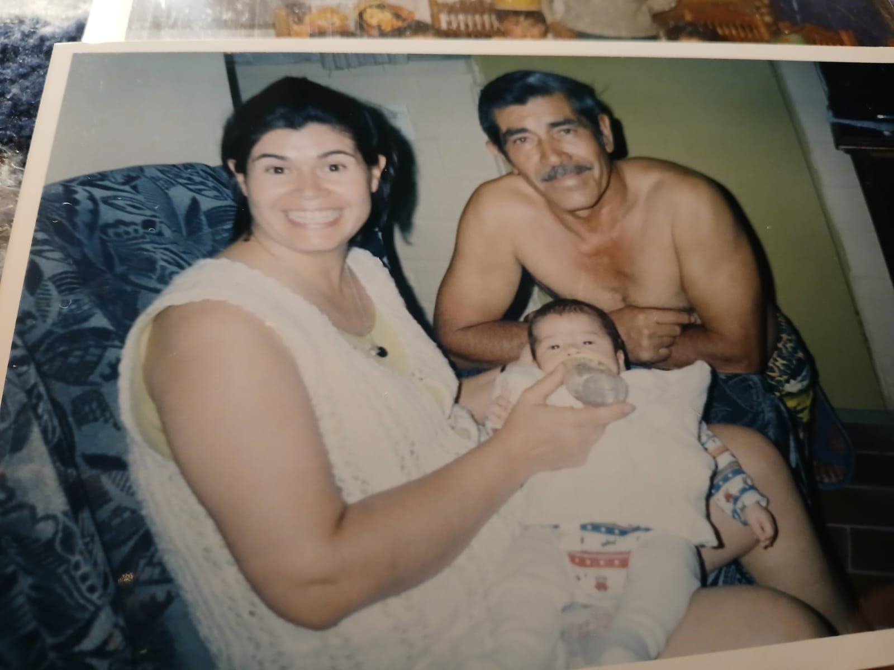
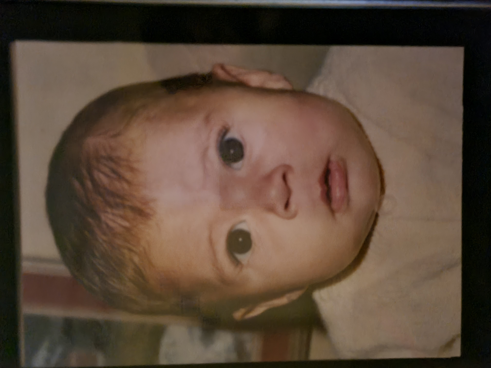
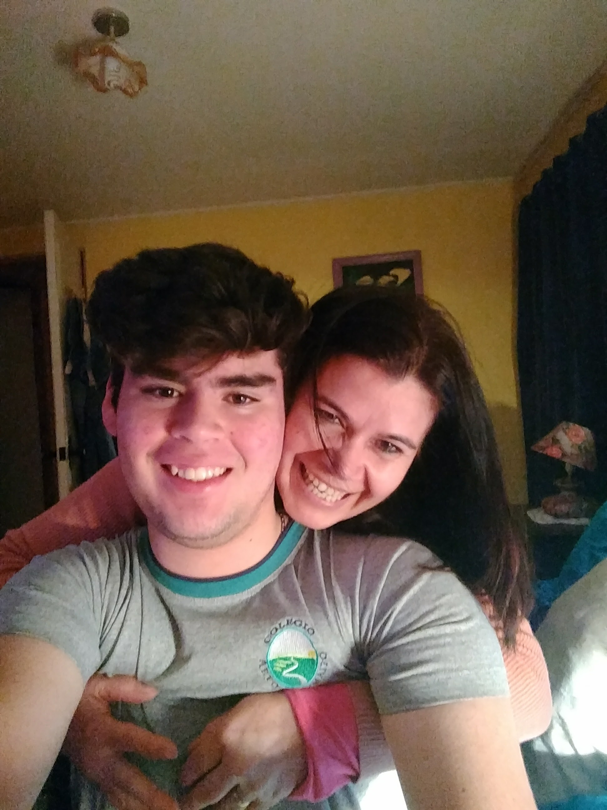
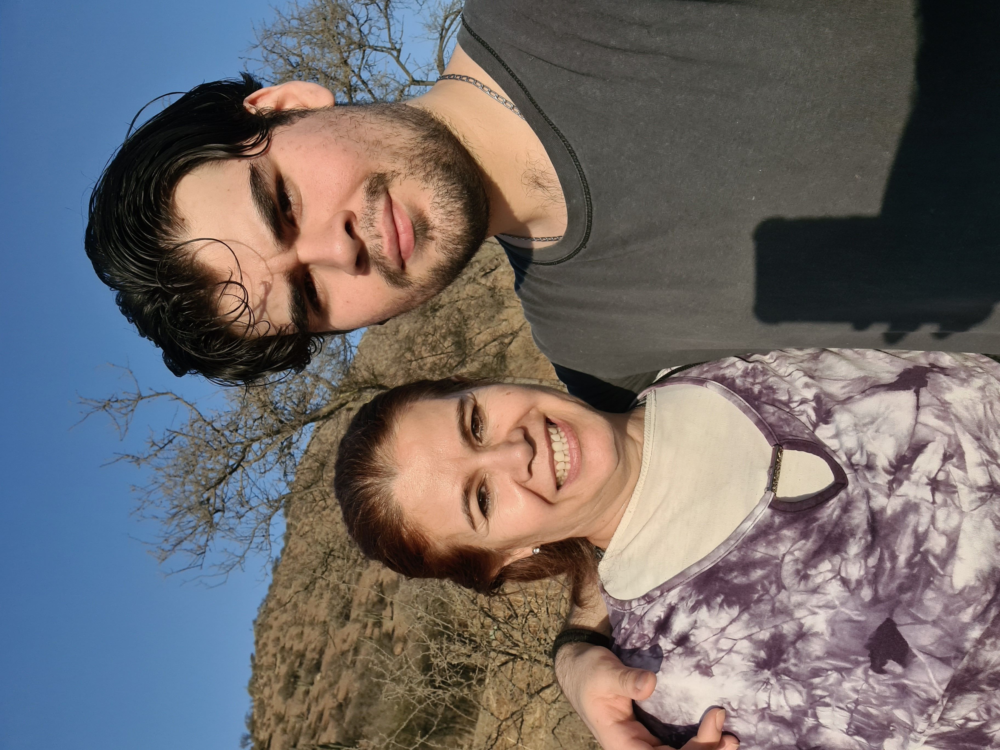
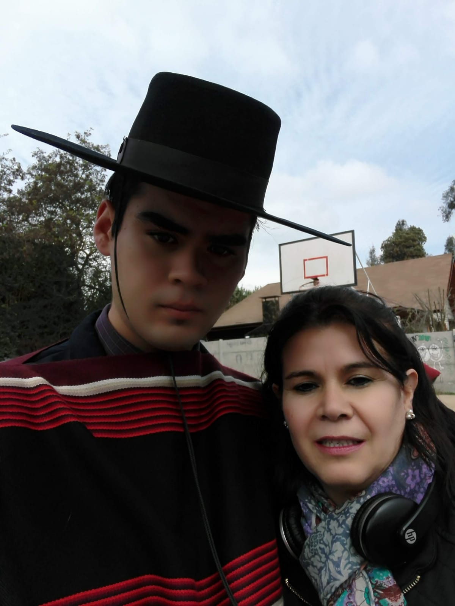
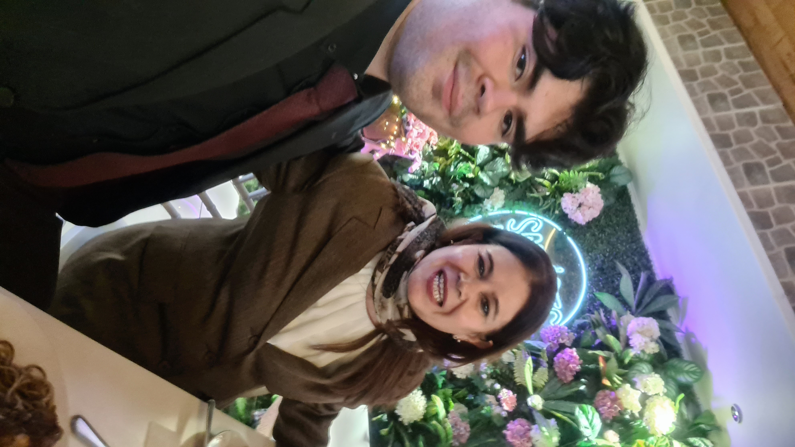
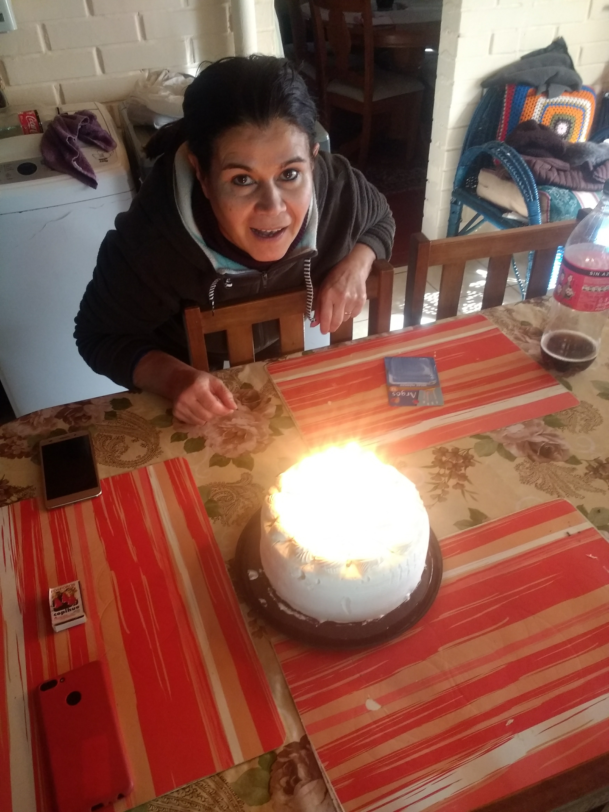
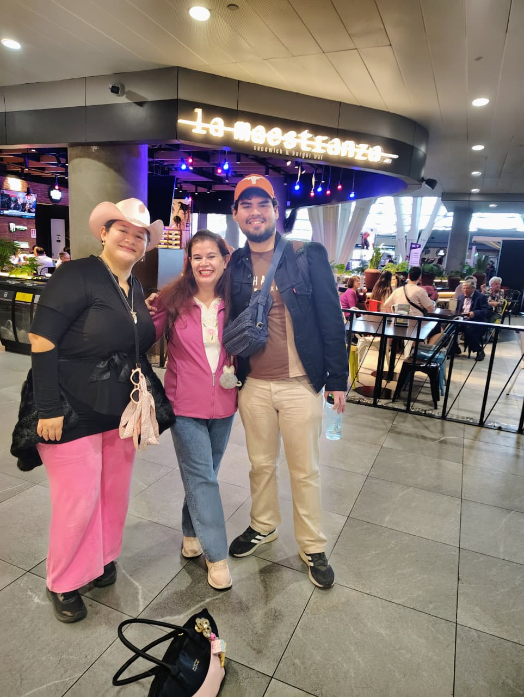

Nuestro álbum de recuerdos
El comienzo de todo
La primera vez que el mundo nos vio juntos. Tú ya sabías que esto sería para siempre.

En brazos de la familia
Entre tus brazos y los del Tata, crecí rodeado de manos que siempre me sostuvieron.

Esos ojos curiosos
Dicen que ya desde bebé miraba el mundo con atención. Lo aprendí de ti.
La felicidad
Instantes de inocencia pura y felicidad junto a ti.
De esas primeras velas
Desde entonces no dejamos de celebrar juntos el regalo de vivir.
Pegados a la cámara
Ya no era tan chico, pero seguía queriendo la foto justo a tu lado.
Un día de sol contigo
El cielo bien azul y tú a mi lado, como en cada salida que recuerdo.

Un abrazo especial
No hacía falta una fecha especial para abrazarnos así.
Los años de colegio
Me acompañaste en cada etapa escolar, una foto a la vez.
Las tardes tranquilas
De las fotos simples, sin ocasión especial, que terminan siendo las más queridas.
Un paseo cualquiera
No recuerdo bien a dónde íbamos, pero sí que íbamos juntos.

Aventuras al aire libre
El paisaje era bonito, pero lo mejor de la foto siempre eras tú.

El huaso de la familia
Hasta con sombrero de huaso, ahí estabas tú a mi lado, orgullosa.
Nuestro estilo
Audífonos al cuello y tu sonrisa cerca, mi combinación favorita.
Vacaciones en familia
El sol, la arena, y la familia completa en una sola foto.
Risas tontas
De esas fotos que se toman sin razón, solo porque estábamos juntos y nos reíamos.
 graduación
graduación
El día del título
Ese papel también es tuyo. Sin ti, ese logro no habría existido.

Una tarde especial
Entre luces y flores, celebrando contigo uno de los días más importantes.

Celebrandote
Como no hacerlo, si tú eres la razón de tantas sonrisas.

Y seguimos aquí
Sumando fotos, sumando años, sumando razones para celebrarte cada vez más.